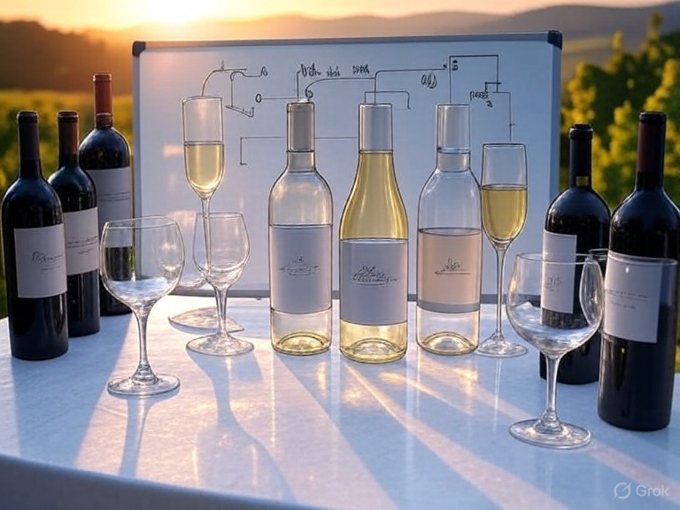
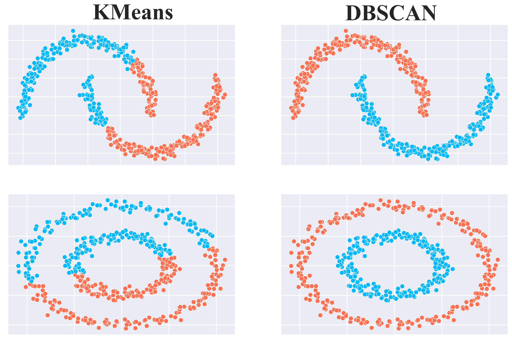

Projetos

Classificação de Vinhos utilizando Algoritmo Adaline com Gradiente Descendente
Aprendizado supervisionado (ADALINE) para classificação de Vinhos
VER MAIS

Clustering com algoritmos DBSCAN e K-Means
Análise de performance de algoritmos de clusterização
VER MAIS
Detecção de Quedas em Dispositivo Médico
Análise de sinais de acelerômetro, giroscópio e magnetômetro de pulseira eletrônica GY-80 para classificar movimentos cotidianos
VER MAIS
Análise de acidentes de trânsito
Análise Exploratória do dataset de acidentes de trânsito do Detran 2024
VER MAIS